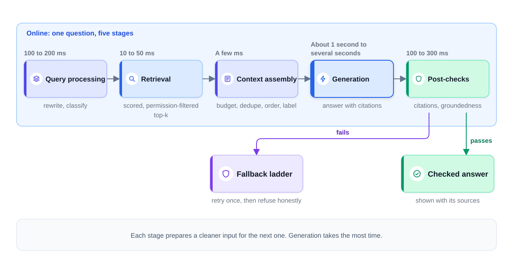
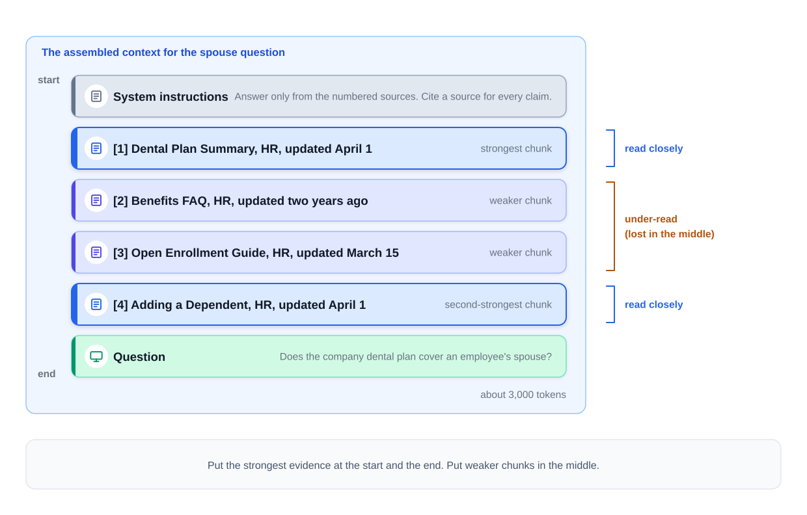
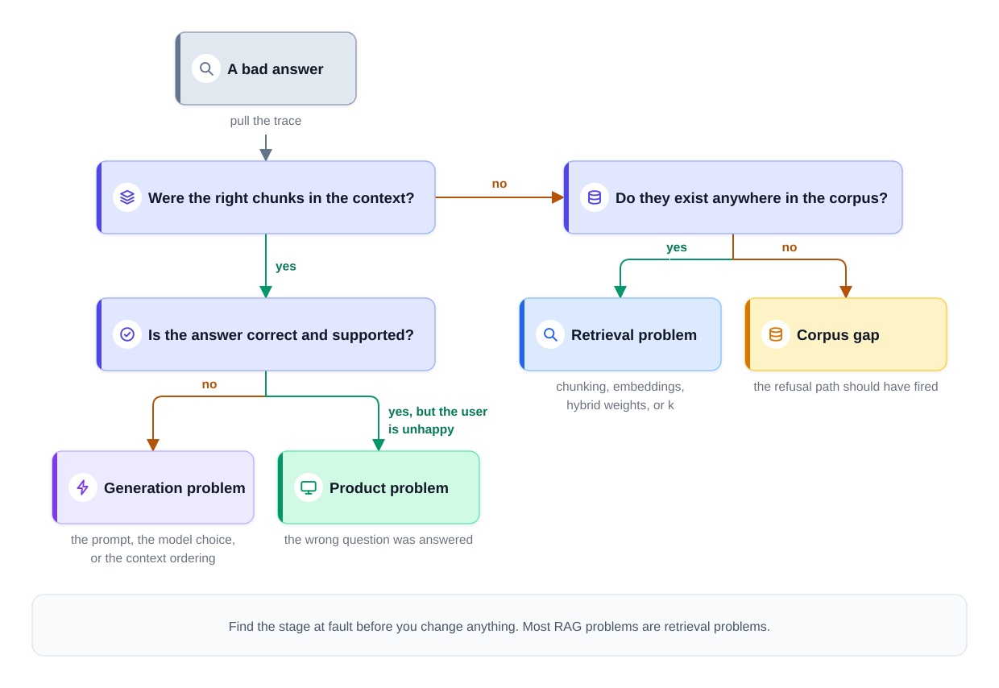

0% completed
The RAG Pipeline
On This Page
Know the Vocabulary
Part 1: One Question, Five Stages
The Problem
The Definition
What the RAG Pipeline Is Not
Part 2: Query Processing Fixes the Question
Conversation Dependence
The Query-Document Vocabulary Gap
Classify Before You Search
Part 3: Retrieval Returns a Short, Scored List
Choosing k
Part 4: Context Assembly Builds the Model's Input
Budgeting: Set by Cost and Latency
Lost in the Middle
Selection and Dedupe
Ordering and Framing
Part 5: Generation and Post-Checks
Generation Picks the Right Model
Post-Checks Test the Answer
The Fallback Ladder
Part 6: Follow One Question
Part 7: Evaluating and Debugging the Pipeline
Two Systems, Two Metrics
Attribute Every Failure to a Stage
A Worked Diagnosis
Part 8: What Changes at Ten Times the Corpus
Part 9: Using This in an Interview
Common Mistakes
Mistake 1: Searching With the Raw Follow-Up
Mistake 2: Sizing the Context by the Window
Mistake 3: Ignoring Position
Mistake 4: Treating the Answer as Final
Mistake 5: Tuning the Prompt First
FAQs
Key Takeaways
Check Your Understanding
Know the Vocabulary
This lesson uses the terms below many times. Read them once now, and come back here when a later section needs one.
- RAG (retrieval-augmented generation): A design that first finds relevant passages in your own documents, then asks a large language model (LLM) to answer from them.
- Corpus: The full set of documents the system can search, stored as chunks.
- Chunk: A focused passage cut from a document, usually a few hundred words or fewer. It is the unit that retrieval works with.
- Embedding: A list of numbers that encodes the meaning of a piece of text. Texts with similar meanings get similar numbers, so a search can match by meaning.
- Query: The text that retrieval searches with. It is not always the exact text the user typed.
- Top-k: The k best-scoring chunks for a query. If k is 5, retrieval returns the 5 best chunks.
- Reranker: A slower, more careful model that reads the question and each candidate chunk together, then puts a short list in a better order.
- Token: A short word or a piece of a longer word. Models read and write text as tokens, and providers charge by the token.
- Context window: The most tokens a model can handle in one call. The input and the answer must both fit inside it.
- Context assembly: Choosing, ordering, and labeling the text that goes into the model's input for one request.
- Frontier model: One of the largest and most capable models a provider offers. It is usually slower and more expensive per token than smaller models.
- Citation: A marker in the answer that points to the chunk a claim came from.
- Groundedness check: A check that each claim in the answer is supported by the retrieved text.
- Golden set: A fixed set of test questions, each with a known good answer and the chunks that should be found for it.
- Retrieval recall: The share of test questions for which the right chunks reached the retrieved top-k.
- Faithfulness: The share of claims in the answers that the context really supports.
Part 1: One Question, Five Stages
The Problem
Embeddings and Vector Databases built a retrieval service for the food-delivery company. It holds help articles for customers, policy pages for support agents, and internal pages for employees. That lesson ended when the search returned its nearest chunks. This lesson follows a question from the moment it is typed to the moment a checked answer appears.
The example comes from the internal help assistant. An employee asks, "What dental plan do we offer?" The assistant answers correctly. Then the employee asks a second question: "Does that cover my spouse too?"
A simple design sends the user's text to the search and pastes the results into a prompt. That design fails here. The search receives "Does that cover my spouse too?" It has no idea what "that" refers to. It returns chunks about spouses from any page, such as travel rules or the employee discount. The model then answers from the wrong pages, or it guesses.
The fix is not one better search call. It is a pipeline, a series of stages where each stage prepares a cleaner input for the next one.
The Definition
The RAG pipeline is the request path from a user's question to a checked answer. It has five stages, always in this order.
-
Query processing turns the user's text into a good query. It rewrites follow-up questions so they stand alone. It also decides whether the corpus can answer the question at all.
-
Retrieval finds the best chunks. It hands back a scored, permission-filtered top-k of chunks. Every chunk carries its score and its metadata, such as its source and date.
-
Context assembly builds the model's input. It sets a token budget, drops duplicates, orders the chunks, and labels each one with its source and date.
-
Generation writes the answer. A model reads the assembled context and writes an answer with citations.
-
Post-checks test the answer before the user relies on it. They confirm that the citations are real and that each claim is supported. When a check fails, a planned fallback takes over.
The diagram below shows the five stages and what each one hands to the next.

Notice that the model that writes the answer appears only in Stage 4. The other four stages prepare its input or check its output, and some of them use small models of their own. Much of the quality of the answer is decided before that model reads a single token.
What the RAG Pipeline Is Not
The RAG pipeline is not one search call and a prompt. Each stage fixes a failure that the simple design cannot fix.
It is not a way to fill the context window. A larger window does not mean a better answer, as Part 4 shows.
It is not finished when the model stops writing. An answer that has not passed its checks is still a draft.
Part 2: Query Processing Fixes the Question
Conversation Dependence
Conversation dependence is when a question only makes sense with the earlier turns of the chat. "Does that cover my spouse too?" depends on the first question. On its own, the word "that" means nothing to a search engine. The search has no history, so it cannot know that "that" means the dental plan.
The fix is query rewriting. A small LLM reads the recent chat history and the new question. It writes one standalone question that keeps the meaning: "Does the company dental plan cover an employee's spouse?" Retrieval then searches with this rewritten query, not with the user's original text.
Query rewriting is often the single highest-value fix for multi-turn RAG. It is one cheap LLM call on a small model, usually 100 to 200 milliseconds (ms). And conversation dependence is often the most common reason that retrieval fails in a multi-turn chat. So a small cost removes the largest source of failures.
The Query-Document Vocabulary Gap
A second problem remains even for standalone questions. The query-document vocabulary gap is when questions and documents are phrased too differently to match. Users ask short, casual questions. Documents are long and formal.
For example, an employee asks, "Can my wife get her teeth cleaned on my plan?" The policy page says, "Eligible dependents include a legal spouse or registered domestic partner. Preventive care is covered at 100%." Embeddings match meaning better than keywords do. But a short question and a formal policy page still get less similar embeddings than two questions with the same meaning would.
Two techniques reduce the gap. Both add cost, so use them only when the golden set shows they help.
- Expansion: Retrieve with the original query plus a paraphrase of it. A small LLM writes the paraphrase in different words. Both searches run, and their results are merged. A chunk that one wording misses, the other wording may find.
- HyDE (Hypothetical Document Embeddings): A model first drafts a hypothetical answer, written the way a policy page would say it. The draft may contain wrong facts, and that is acceptable. Retrieval then searches with the draft instead of the question. The draft is phrased like a document, so its embedding is often close to the embeddings of the real documents.
The draft from HyDE is never shown to the user. It is only a search key.
Classify Before You Search
Query processing also classifies the question. Can the corpus answer this question at all? The HR assistant can answer questions about benefits and leave. It cannot answer "Where is my food order?" or "What will the stock price be next week?"
This check saves cost, because an out-of-scope question skips retrieval and generation. It also prevents fabricated answers early. A model given weakly related chunks for a question they cannot answer may still write a confident reply. Routing the question away first is much safer. The user gets a useful redirect, such as a link to the right tool.
The same step can attach the user's access rights to the request, so retrieval can filter by them. It can also pull out filters from the text, such as a date or a team name.
Part 3: Retrieval Returns a Short, Scored List
Retrieval takes the processed query and finds the best chunks. The earlier lessons of this module built its parts. Chunking and Indexing turned documents into chunks with metadata. Embeddings and Vector Databases built the index and the permission filter that runs during the search.
In plain terms, retrieval does three things for each request.
-
It embeds the query with the same model that embedded the corpus.
-
It searches for the nearest chunks that this user may read. Many systems also run a keyword search next to the vector search.
-
It often sends the candidates to a reranker, which keeps the best few.
What retrieval hands back to context assembly is a scored, permission-filtered top-k of chunks. Scored means each chunk has a number for how well it matches. Permission-filtered means no chunk the user may not read is in the list. Top-k means the list is short.
Choosing k
The value of k is a trade. Too few chunks can miss the evidence. Too many add noise, cost, and latency.
A common starting point is to retrieve 10 to 20 chunks, rerank them, and keep 3 to 5. Then sweep k on the golden set. To sweep means to run the golden set at several values of k, such as 3, 5, and 8. For each value, measure retrieval recall, answer quality, cost, and latency. Choose the smallest k that keeps quality high. These numbers are a starting point to test, not a rule.
Some systems give the reranker a longer list, such as 50 to 100 candidates, and keep 3 to 8. Hybrid Search and Reranking explains the keyword search, the merge, the reranker, and when that longer list is worth its time.
Part 4: Context Assembly Builds the Model's Input
Context assembly decides exactly what the model reads. It has three jobs: budgeting, selection and dedupe, and ordering and framing.
Budgeting: Set by Cost and Latency
Budgeting sets how many tokens the context may use. Cost and latency requirements set this budget, not the model's maximum window.
Here is why. Suppose the model's window holds 200,000 tokens. At an example price of $3 per million input tokens, a full window costs about 60 cents for every question. It also makes the model slower to start writing, because the model must read every input token first. A context of about 3,000 tokens costs less than a cent. Inference Economics explains these prices. They are examples, so check current prices.
So the team starts from its targets. For example: under 2 seconds to the first token, and a cost per question the product can afford. The budget follows from those targets. The window size only sets the upper limit.
Lost in the Middle
There is also a quality reason to keep the context short. Models do not read a long context evenly. Research has found that many models use information near the start and the end of the input more reliably than information in the middle. This effect is called lost in the middle. A long middle section gets under-read.
The effect differs from model to model, so test it with your own model. But the lesson for the design is clear. Fewer, better chunks often beat more, noisier ones.
Selection and Dedupe
Selection and dedupe removes chunks that would waste the budget. It does two things.
- It drops near-duplicate chunks. The text of the Dental Plan Summary may appear again, word for word, in the onboarding guide. Two copies of the same text add tokens but no new facts.
- It caps the chunks allowed per source. For example, at most 2 chunks from any one document. Without a cap, one long document can fill the whole list and push out other useful sources.
Ordering and Framing
Ordering decides where each chunk sits. Put the strongest evidence at the start and the end, where the model's attention is strongest. Put weaker chunks in the middle. For example, the best chunk goes first, and the second-best goes last, just before the question.
Framing decides how each chunk is presented. Context assembly labels each chunk with its source and date, like this: "[1] Dental Plan Summary, HR, updated April 1." The labels do two jobs.
-
They make citations possible. The model can write "[1]" after a claim, and the system can trace it back to that chunk.
-
They let the model resolve conflicting sources. Suppose the old FAQ says spouses need a separate form, but the newer plan summary does not. The labels show which source is newer and which is official. The instructions then say how to handle the conflict, or to state it plainly when it cannot be resolved.
The context also carries the system instructions. These are fixed instructions that come before everything else. For example: "Answer only from the numbered sources. Cite a source for every claim. If the sources do not contain the answer, say so."
For the spouse question, four chunks remain. They come from the Dental Plan Summary, the Benefits FAQ, the Open Enrollment Guide, and the Adding a Dependent page. The Benefits FAQ is the old FAQ, updated two years ago. The diagram below shows the assembled context, from top to bottom.

Notice that the context is small. Four labeled chunks, the instructions, and the question come to about 3,000 tokens. Every token in it was chosen on purpose.
Part 5: Generation and Post-Checks
Generation Picks the Right Model
Generation sends the assembled context to a model and gets back an answer with citations. One design choice matters most here: which model writes the answer.
The routing rule is simple. Send simple lookups to a small model, and send synthesis across several chunks to the frontier model.
- A simple lookup finds one fact in one chunk. "Does the dental plan cover my spouse?" is a lookup. A small model can answer it well, often at a tenth of the frontier price or less.
- Synthesis across chunks combines facts from several sources. "Compare the two dental plans for a family of four, including the yearly limits" is synthesis. It needs the stronger model.
The classification in query processing can give the router this signal. Check the small model's answers on the golden set, so the cheap path keeps its quality. Serving Optimizations covers routing in detail.
Post-Checks Test the Answer
Post-checks run after the model writes and before the answer is trusted. Two checks are the core.
- Citations must resolve. Every cited source must really be a chunk present in the context. If the answer cites "[7]" but only four chunks were sent, the citation is invented. A claim with no citation at all also fails, because the instructions require one for every claim. This check is a simple lookup, so it is fast and exact.
- The groundedness check asks whether each claim in the answer is supported by retrieved text. A small, fast model or an entailment model reads each claim next to its cited chunk. An entailment model is one trained to judge whether one text implies another. The check takes about 100 to 300 ms in this example.
A real citation is not enough on its own. The model can cite a real chunk and still misstate what it says. That is why the groundedness check exists. Keeping Answers Grounded covers both checks in depth.
The Fallback Ladder
A check will sometimes fail. The pipeline needs a designed fallback ladder, decided in advance. It has two steps.
Step 1: Retry once with tightened instructions. For example, "Use only the numbered sources. Remove any claim you cannot cite." Then run the checks again. Retry only once, because each retry adds time and cost.
Step 2: Degrade honestly. If the retry also fails, do not show the unchecked answer. Say that the assistant could not find a supported answer. Show the sources it did find, or offer a link to the HR portal or a person.
Keeping Answers Grounded adds a lighter step before the retry for low-stakes claims: remove or hedge the one claim that failed. For high-stakes topics, the two steps above are the whole ladder.
An honest "I could not find this" is a correct result. A confident wrong answer is one of the most harmful results a RAG system can give.
Part 6: Follow One Question
The steps below follow the spouse question through all five stages. The times are illustrative.
Step 1: The follow-up arrives. At 9:40 AM, an employee asks, "Does that cover my spouse too?" The previous turn was about the dental plan.
Step 2: Query processing runs. A small model rewrites the question as "Does the company dental plan cover an employee's spouse?" A classifier marks it as a benefits question the corpus can answer. The request carries the employee's access groups. This takes about 150 ms.
Step 3: Retrieval runs. The query is embedded and searched, filtered to pages this employee may read. About 30 ms later, 20 candidates come back. A reranker keeps the best 5 in about 80 ms.
Step 4: Context is assembled. One chunk from the onboarding guide repeats the plan summary word for word, so it is dropped. The other four chunks get their source and date. The plan summary goes first, and the Adding a Dependent page goes last. The total is about 3,000 tokens, and this takes a few milliseconds.
Step 5: Generation runs. This is a simple lookup, so a small model writes the answer. It writes: "Yes. A legal spouse or registered domestic partner is an eligible dependent on the dental plan [1]." This takes about 1 second.
Step 6: Post-checks run. Citation [1] resolves to a chunk in the context. The groundedness check finds the claim supported. This takes about 200 ms. The answer is shown about 1.5 seconds after the question was sent.
Step 7: The trace is logged. The system records each stage's output: the rewritten query, the chunks and their scores, the context, the answer, and the check results. Part 7 explains why this record matters.
The latency budget for this request can be itemized stage by stage, the same way Model Serving Basics itemizes a prediction request.
| Stage | Example time |
|---|---|
| Query rewrite | 100 to 200 ms |
| Retrieval (embed and search) | 10 to 50 ms |
| Reranking, if used | 50 to 100 ms |
| Context assembly | A few ms |
| Generation | About 1 second to several seconds |
| Post-checks | 100 to 300 ms |
Notice that generation takes the most time by far. The rewrite and the search are small next to it. So the most effective ways to cut latency are a shorter context, a shorter answer, and a smaller model where quality allows.
Notice also when the user sees the answer. In this design, the answer appears only after the checks pass. Some products stream the answer as it is written and check it afterward. But a check that runs after the user has read the answer cannot protect that answer.
Part 7: Evaluating and Debugging the Pipeline
Two Systems, Two Metrics
A RAG system is two systems: a search system and a writing system. Each needs its own metric.
- Retrieval recall checks the retrieved chunks. The golden set records which chunks should be found for each question. Recall is the share of questions where those chunks reached the top-k.
- Faithfulness checks the claims made. It measures the share of claims in the answers that the context really supports.
A good answer needs both. High recall with low faithfulness means the model had the facts and misused them. High faithfulness with low recall means the model was careful, but often had the wrong evidence.
The single most senior sentence you can say in a RAG interview is this: "Most RAG problems are retrieval problems, so I measure recall first." Prompt changes cannot fix evidence that never reached the model.
Attribute Every Failure to a Stage
When an answer is wrong, the first job is to find which stage failed. Every failure should be attributed to a stage. The trace from Step 7 makes this possible, because it shows what each stage produced.
The debugging matrix below asks two questions in order. Were the right chunks in the context? Do they exist anywhere in the corpus?
| What the trace shows | Diagnosis | Where to look |
|---|---|---|
| Good chunks were in the context, but the answer is wrong or unsupported | A generation problem | The prompt, the model choice, or the context ordering |
| The right chunks are absent from the context | A retrieval problem | Chunking, embeddings, hybrid weights, or k |
| The right chunks do not exist anywhere in the corpus, and the answer is fabricated | A corpus gap | The refusal path should have fired instead |
| Good chunks were retrieved and the answer is correct, but the user is unhappy | A product problem | The wrong question was answered |
The second row is a retrieval problem whatever the answer says. Even a correct answer without the right chunks is a guess. Hybrid weights are the settings that decide how much the keyword search and the vector search each count in the merge. The third row is two failures at once. The content is missing, which is a gap for the content team. And the pipeline wrote an answer anyway, which means its checks did not stop it. The fourth row often means query processing misread what the user wanted.
The diagram below turns the matrix into a short decision path. When the right chunks were in the context, it asks one more question: is the answer correct and supported?

A Worked Diagnosis
Here is an example. A customer asks the support assistant whether a refund covers an order delayed by a road closure. The assistant answers confidently that the policy covers it. The answer has no citation. The corpus has no document about road closures at all.
Apply the matrix. The right chunks do not exist, so this is a corpus gap. But the pipeline should still have refused. The post-checks should have failed the answer, because its claim had no citation and nothing in the context supported it. The fallback ladder should then have retried once and degraded honestly. So there are two fixes: add the missing policy, and find out why the post-checks let an uncited answer through.
Part 8: What Changes at Ten Times the Corpus
Suppose the corpus grows from 10 million chunks to 100 million. The five-stage shape does not change. Three specific things get harder.
-
Retrieval precision drops. With ten times more chunks, more of them look similar to any question. Near misses push the right chunk lower in the list. The reranker and metadata filters matter more, and recall must be measured again.
-
Index memory grows tenfold. In Embeddings and Vector Databases, 10 million vectors took about 40 GB. At 100 million, they need about 400 GB before the graph and the copies. That means quantization, sharding, or both. Quantization stores each number in fewer bits, and sharding splits the index across machines.
-
Duplicate pressure rises. A larger corpus holds more copies and more old versions of the same text. Selection and dedupe must work harder, and source caps matter more.
So the answer to "what breaks at 10x?" is specific. Name these three, and say that the pipeline itself stays the same.
Part 9: Using This in an Interview
The 30-second answer (to "walk me through your RAG request path"): "I would run five stages. Query processing rewrites follow-up questions into standalone ones and routes questions the corpus cannot answer. Retrieval returns a scored, permission-filtered top-k, usually after reranking. Context assembly sets a token budget from cost and latency, drops duplicates, caps chunks per source, and puts the strongest evidence first and last. Generation routes lookups to a small model and synthesis to a frontier model, with citations. Post-checks verify citations and groundedness, then retry once or refuse honestly. I evaluate retrieval recall and faithfulness separately, and I check recall first."
Likely follow-ups:
- "Why not fill the context window with everything retrieved?" Cost and latency grow with every input token. Models also under-read the middle of a long context. A smaller context of strong, labeled chunks usually gives better answers for less money.
- "How do you choose k?" Retrieve 10 to 20, rerank down to 3 to 5, then sweep k on the golden set. Choose the smallest k that keeps recall and answer quality high.
- "An answer was wrong. How do you debug it?" Pull the trace and go through the matrix in order. If the right chunks were missing, it is a retrieval problem. If they were present, it is a generation problem. If they do not exist, it is a corpus gap, and the refusal path failed.
Common Mistakes
Mistake 1: Searching With the Raw Follow-Up
"Does that cover my spouse too?" retrieves nothing useful on its own. Rewrite follow-up questions into standalone queries before retrieval.
Mistake 2: Sizing the Context by the Window
A large window is a limit, not a target. Set the token budget from cost and latency, and keep the context short and strong.
Mistake 3: Ignoring Position
Strong evidence buried in the middle of a long context can be under-read. Put the strongest chunks at the start and the end.
Mistake 4: Treating the Answer as Final
An unchecked answer can cite chunks that were never sent or make claims nothing supports. Run the post-checks, and plan the fallback ladder in advance.
Mistake 5: Tuning the Prompt First
Most failures start in retrieval. Measure recall first, and use the trace to find the stage at fault before you change anything.
FAQs
Q: Is query rewriting needed for single-turn questions?
No, not to fix conversation dependence, because a single question already stands alone. But the same step can still classify the question and reduce the vocabulary gap. Keep it if the golden set shows it helps.
Q: Does HyDE always improve retrieval?
No. It adds an LLM call before the search, and its draft can pull the search toward the wrong topic. Turn it on only when the golden set shows better recall, and only for the question types where it helps.
Q: Should every RAG system use the frontier model for generation?
No. Many questions are simple lookups that a small model answers well at a much lower cost. Route synthesis across several chunks to the frontier model, and check the small model's quality on the golden set.
Q: If the groundedness check passes, is the answer correct?
No. It means the answer agrees with the retrieved text. If a source is outdated or wrong, a grounded answer repeats the error. Source quality and freshness still matter.
Q: Can the post-checks run after the answer streams to the user?
Yes, but then they only monitor quality. They cannot protect an answer the user has already read. For high-stakes topics, such as HR, legal, or money, run the checks before display.
Key Takeaways
- The RAG pipeline has five stages, in order. Query processing, retrieval, context assembly, generation, and post-checks each prepare a cleaner input for the next.
- Query processing fixes the question before the search. Rewriting removes conversation dependence, expansion and HyDE reduce the vocabulary gap, and classification routes out-of-scope questions early.
- Retrieval hands back a scored, permission-filtered top-k. Start with 10 to 20 candidates, rerank to 3 to 5, and sweep k on the golden set.
- Context assembly is a design, not a paste. Cost and latency set the budget, and duplicates are dropped. Strong evidence goes first and last, and every chunk is labeled with its source and date.
- Generation and post-checks work as a pair. Route lookups to a small model, verify citations and groundedness, then retry once or refuse honestly.
- Measure the two systems separately. Retrieval recall checks the chunks, faithfulness checks the claims, and the debugging matrix names the stage at fault.
- In a system design interview, name the five stages and give each one a time in the latency budget. Then say, "Most RAG problems are retrieval problems, so I measure recall first."
The next lesson, Hybrid Search and Reranking, looks inside the retrieval stage. It shows why vector search alone misses some questions, and how a reranker picks the best few chunks.
Check Your Understanding
1. A chat user asks "What about part-time staff?" and the search returns unrelated pages. Which stage should fix this, and how?
Show answer
Query processing, by rewriting the question. The question depends on the earlier turns, so the search cannot tell what it refers to. A small LLM rewrites it into a standalone question that names the topic, and retrieval searches with that.
2. A model has a 200,000-token window. Why might a team still keep the context near 3,000 tokens?
Show answer
Because cost and latency set the budget, not the window. Every input token costs money and adds time before the first word appears. Models also under-read the middle of a long context, so fewer, stronger chunks often give better answers.
3. An answer cites source [6], but only five chunks were in the context. Which check catches this, and what happens next?
Show answer
The citation check catches it, and the fallback ladder takes over. Every citation must resolve to a chunk present in the context, and [6] does not. The pipeline retries once with tightened instructions. If the retry also fails, it degrades honestly instead of showing the answer.
4. The trace shows that the right policy chunk was in the context, but the answer misstated it. What kind of problem is this?
Show answer
A generation problem. Retrieval did its job, because the right chunk reached the model. Look at the prompt, the model choice, and the context ordering. For example, the chunk may have sat in the middle of a long context.
0 Comments
No comments yet. Be the first to start the discussion!
Reading Progress
0%
On This Page
Know the Vocabulary
Part 1: One Question, Five Stages
The Problem
The Definition
What the RAG Pipeline Is Not
Part 2: Query Processing Fixes the Question
Conversation Dependence
The Query-Document Vocabulary Gap
Classify Before You Search
Part 3: Retrieval Returns a Short, Scored List
Choosing k
Part 4: Context Assembly Builds the Model's Input
Budgeting: Set by Cost and Latency
Lost in the Middle
Selection and Dedupe
Ordering and Framing
Part 5: Generation and Post-Checks
Generation Picks the Right Model
Post-Checks Test the Answer
The Fallback Ladder
Part 6: Follow One Question
Part 7: Evaluating and Debugging the Pipeline
Two Systems, Two Metrics
Attribute Every Failure to a Stage
A Worked Diagnosis
Part 8: What Changes at Ten Times the Corpus
Part 9: Using This in an Interview
Common Mistakes
Mistake 1: Searching With the Raw Follow-Up
Mistake 2: Sizing the Context by the Window
Mistake 3: Ignoring Position
Mistake 4: Treating the Answer as Final
Mistake 5: Tuning the Prompt First
FAQs
Key Takeaways
Check Your Understanding